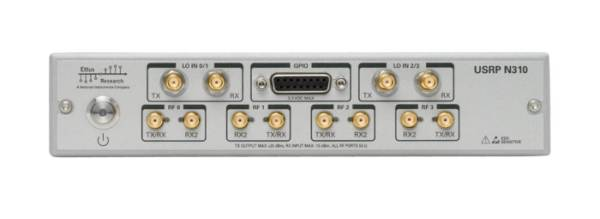

Cross-Wavelength Sensing
Physics-based techniques enable new sensing and communications modalities by fusing information obtained at multiple wavelengths.

Wireless Systems
End-to-end tests of mmWave cellular network algorithms and infrastructure using modified COTS devices to understand real-world system performance.
mmWave SDR
Custom SDR development for cutting-edge mmWave platforms leveraging commodity components for low cost and custom FPGA designs for high bandwidth.
Published Work
Metasight
Metasight which leverages carefully designed passive millimeter-wave metasurface reflectors and a novel angular encoding scheme to dramatically reduce the reflector size. It leverages metasurfaces which are fully passive, low cost, and can be fabricated by simply using a 3D printer and copper tape.
Mosaic
Mosaic enables ubiquitous sensing around obstructions in automotive applications by leveraging many irregularly-shaped reflectors available near intersections. We achieve sub-meter NLoS sensing accuracy using only small lamp posts as NLoS reflectors, and more than triple the availability of NLoS sensing paths in real-world tests at representative intersections.

SpaceBeam
Spacebeam substantially reduces or eliminates mmWave beam selection overhead by using out-of-band infrared measurements of the surrounding environment generated by a LiDAR sensor. We demonstrate that this approach reduces beam-selection overhead by over 95% in indoor multi-user scenarios, reducing network latency by over 80% and increasing throughput by over 2x in mobile scenarios.

M-Cube
M3 is a fully-programmable low-cost mmWave massive MIMO SDR leveraging reverse-engineered, off-the-shelf components. Up to 8 phased arrays with 32 elements each (256 total!). Now shipping to academic labs around the world.

More Details
Open Source
M3 Software-Defined Radar FPGA
We demoed an M-Cube software radar at Mobisys 2022, using a stock M-Cube software radio in conjunction with an FPGA design I developed. I am still working to release this software — please get in touch if interested, or for a demo.
M3 Phased Array Controller
A real-time phased array control device emitting a reverse-engineered version of Qualcomm's 60 GHz phased array control protocol. Integrates with standard software-defined radios, and easily extended for custom SDRs. Controlled via a simple serial interface, with an easy-to-use Matlab interface.

Matlab Interface for High-End USRPs
Matlab's built-in USRP interface tends to lag behind the latest UHD version, and lacks key functions needed for M3. My USRP interface interfaces with your UHD version of choice, and includes the GPIO features needed for the real-time phased array control features of M3.

macOS Utilities
Simple macOS utilies to convert SMB share path formats, detect file corruption, and turn Youtube channels into podcasts.
Contact Me
I am interested in collaborations with research groups, companies, and government organizations that can leverage my experience in creating real-world prototypes and testbeds to rapidly build and evaluate new networking and sensing ideas.
I am on the job market, and am interested in both research lab and academic positions.